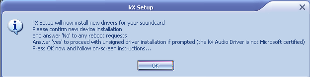
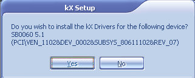
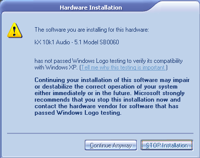
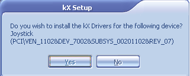
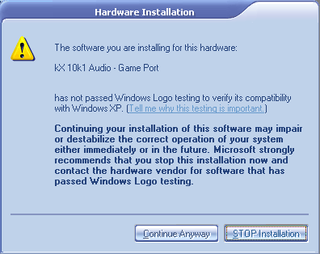
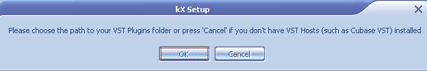
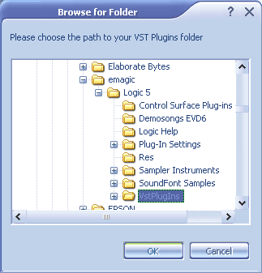
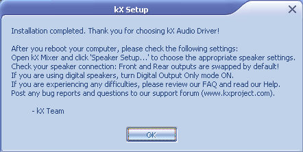
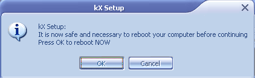

Note: This installation was carried out on Windows XP Professional with a custome theme, so don't be alarmed if the message boxes look a little wierd or some don't pop up.
If you have the Original Soundblaster Drivers from Creative, click here for instructions on how to uninstall.
Once you have installed the soundcard, a popup window may appear when you turn the computer on. If you are prompted to install anything click "Cancel".
I assume you have downloaded the kX Project Drivers from the kX Website. You are now tasked with installing them.
Note: Some users of Windows 98SE have reported that there are errors when installing kX Version 3537, to prevent errors on boot-up, install version 3534f from here first, and then install version 3537
Press Install
A dialog box will pop up with the EULA (End User License Agreement)
Click the tick to continue
The first message box to pop-up looks like this

click "OK" to continue

This message box asks you whether you want to install the drivers for the
soundcard, clicking "Yes" will install them.

On Windows 2000/XP this message may pop up.
Click "Continue Anyway" as it has no consequence.

This message box asks you whether you would like to install the drivers for
the gameport, clicking "Yes" will install them.

This warning again, click "Continue Anyway"

This message box asks you if you have a VST host such as Cubase, Logic etc.
Click "OK" if you have one of these or "Cancel" if you
do not.
If you click "OK", this browse window will appear

Use it to find the VstPlugIns folder located on your computer - this will install
the kX VSTi automation plugin, letting you control elements of the kX Mixer
within the VST host program

This dialog tells you the final steps you must take to get the drivers to work
and the final message box…

…asks you whether you would like to restart, pressing "OK" will restart, while
pressing "Cancel" will allow you to save work in open programs before
restarting your computer.
Note: If this installation fails on Windows XP or Windows 2000 there is a guide on how to install on these operating systems here.
Top Index